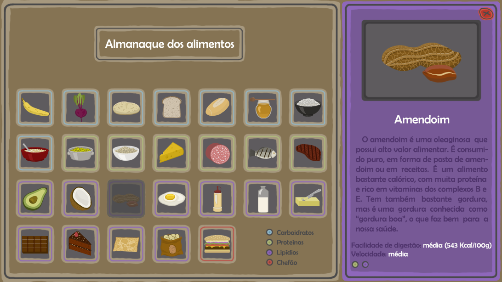
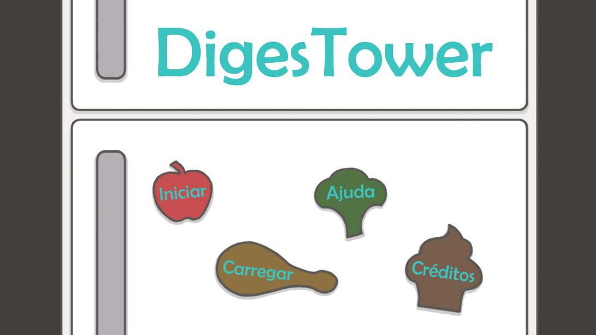
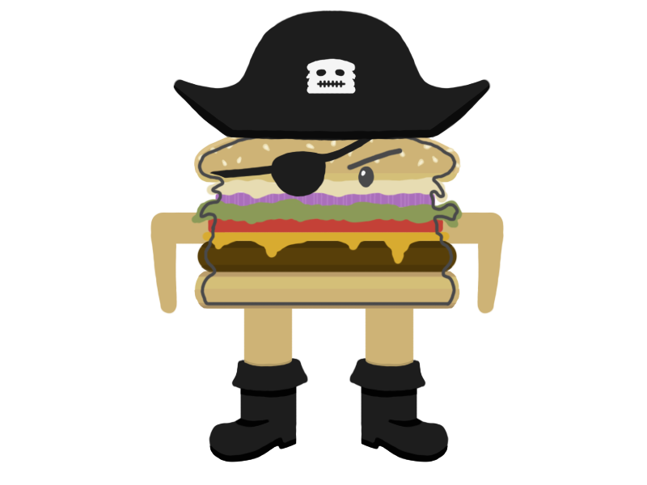
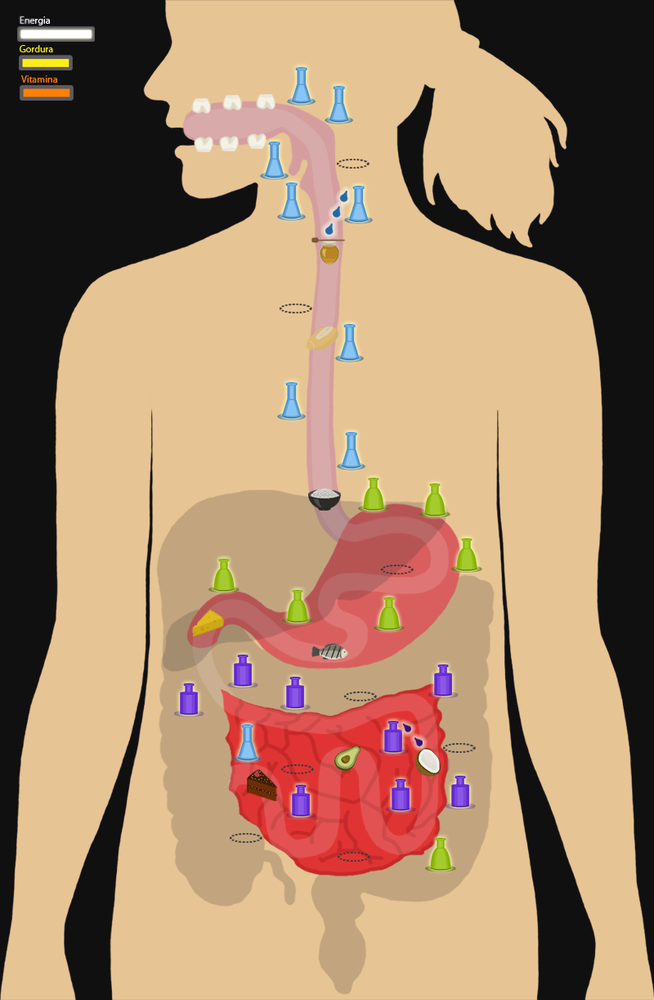

Estilo: Tower Defense/Estratégia
Objetivo Pedagógico: Fazer com que o jogador descubra o sistema digestório.
Tecnologias Utilizadas: Unity
Resumo: O jogo educacional DigesTower aborda as temáticas: alimentação balanceada, o exercício físico e os
processos envolvidos na digestão dos alimentos. Este jogo possui duas versões: uma voltada para crianças em idade escolar e
uma segunda voltada para alunos do curso profissionalizante de enfermagem.




